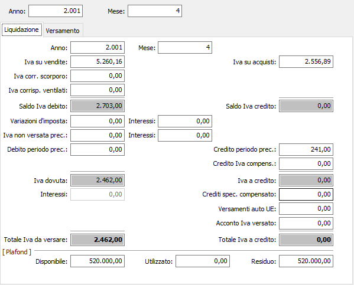
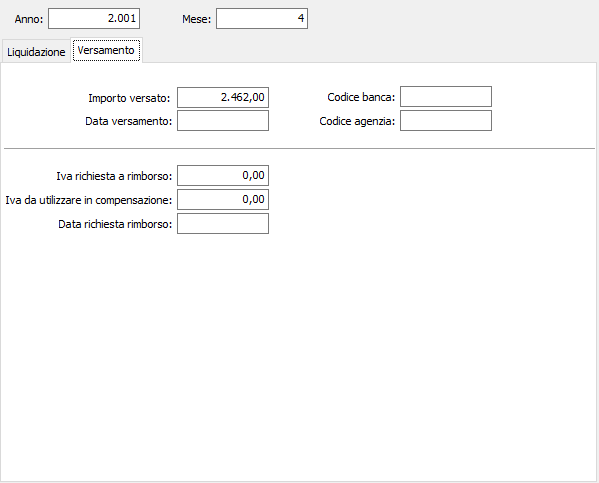
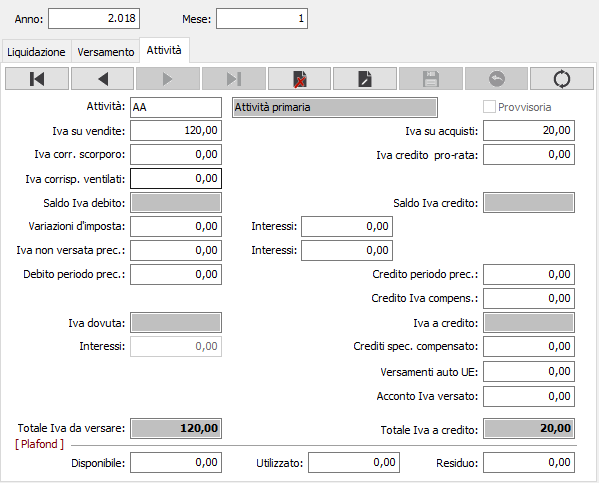

Liquidazione Iva
Si tratta di un programma di servizio relativo al modulo Contabilità base che permette l'inserimento manuale dei valori relativi alla liquidazione Iva.
L'utilizzo di questo programma di servizio, si dovrebbe limitare al solo inizio dell'attività con la procedura OS1 per riportare i valori presenti nel precedente applicativo utilizzato.


Se è gestita la multi attività Iva, sarà presente anche la relativa pagina in cui gestire i dati della liquidazione per singola attività.
